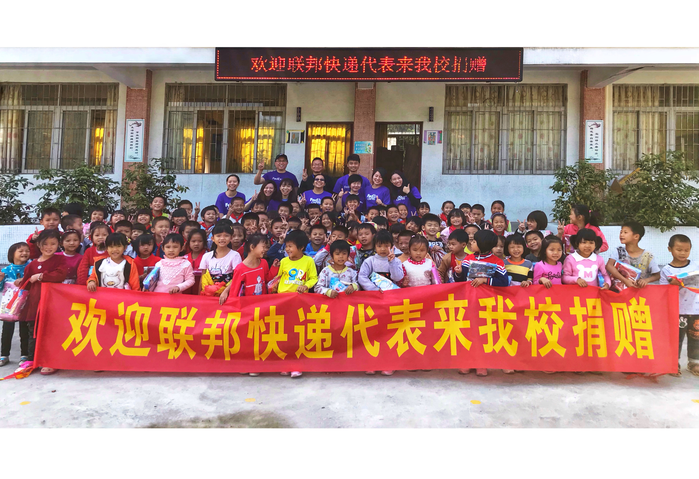
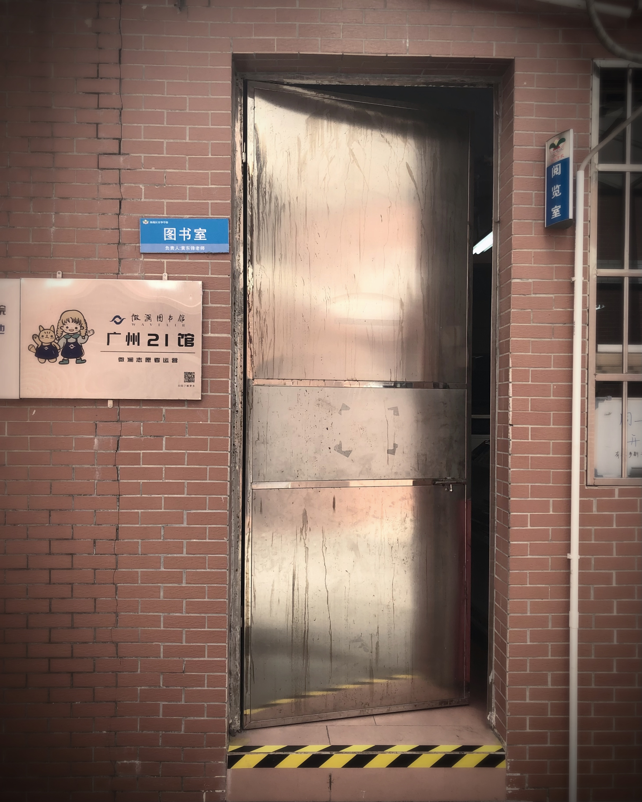

让更多孩子接触书籍，点燃阅读热情。在图书馆里，我不仅是志愿者，更是孩子和家长之间的"阅读翻译官"。

我们联合发起了这次公益活动。将公司员工捐赠的图书，驱车几个小时送到郁南镇小学，并进行了图书的分拣、粘标签，建立起一个小型图书馆。
这些孩子中很大一部分是留守儿童。他们最感兴趣的除了图书之外，还有我们这群志愿者叔叔阿姨。他们非常热情地和我们交流、互动、玩游戏，问了很多关于大城市的事情。
我们在他们的眼中，看到了对认知这个世界的渴望与希望。所以，图书馆活动捐赠的不单是图书，更是希望。
我们也请学校对这次活动进行必要的宣传推广，旨在让更多家长重视与孩子的沟通交流。即使不能每天陪伴在身边，也需要了解孩子内心的想法、成长诉求和希望，而不只是单纯在物质上提供支持。

我们作为图书管理员志愿者的身份参与。每隔两周，就会去值班一个上午。
除了日常的图书修补、借用、归还这些流程之外，我们都会在孩子们下课时的十几分钟里，向他们介绍图书、推荐一些有趣的图书，并对图书里的内容进行讲解。
这个过程对于一些还没做父母的志愿者来说，体会更加深刻。他们以前会觉得孩子们活泼好动、很难管理，甚至有些是"熊孩子"，但这种定期的沟通交流让他们明白：其实每一个熊孩子背后都有自己的故事。
曾经有个孩子跟我们说，他在学校受到同班同学的霸凌。每次图书馆开门，他都会留在馆里直到最后一刻，即便关门了也不想走。
我们的志愿者好奇地问他原因，后来才发现，是因为班里有同学会对他进行霸凌，他躲在图书馆是为了避开那个同学。
我们征得了这个孩子的同意，将情况反映给了老师，请老师去进行沟通交流，甚至建议在教室及学校的主要场地增加监控。
图书馆活动中，我扮演的"翻译家"角色：
• 把书籍翻译成孩子能理解的世界：不只是借书还书，而是帮助孩子发现阅读的乐趣
• 把"熊孩子"的行为翻译成他们内心的需求：每个"难管"的孩子背后，都有一个需要被理解的故事
• 把家长的角色翻译成"陪伴者"：即使不能每天在孩子身边，也要了解他们内心的想法和希望
从捐赠图书到发现霸凌，图书馆不仅是存放书的地方，更是存放孩子心事的地方。